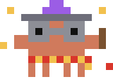

Never hit your Claude limit blind.
ClaudeBar puts your 5-hour and weekly usage in the menu bar, next to a tiny pixel creature who gets nervous before you do.
Free, and unsigned for now, so macOS asks you to confirm the first launch. Here is the one extra click.
ClawdIdle
See it before it happens to you.
Clawd gets nervous at 75%, red-hot at 90%, and a ghost at 100%. Then your limit resets.
Clawd never talks. He just looks how you feel.
One mood at a time, always from your real usage. A warning is never hidden behind a costume.
424 costumes. Pull one.
Astronaut, detective, wizard school, bee, and hundreds more across 26 collections. Wear any of them, anytime.
- Outfits
- Follow the calendar and the time of day.
- Scenes
- A treadmill when you burn fast. A wizard after 45 minutes of Claude Code.
- Cards
- Every costume is a collectible card in five finishes. Share or save it as an image.
- Shiny
- A rare shiny day, because why not.
Every costume
What it reads, and when.
To show your usage, ClaudeBar needs your claude.ai login. Here is every step, so you can say no.
Three steps. One is a bit fiddly.
Grab ClaudeBar.dmg from the latest release. It needs macOS 14 or later.
Download ClaudeBar.dmgOpen the disk image and drop ClaudeBar onto the Applications folder.
ClaudeBar is not signed with an Apple developer certificate, so macOS blocks the first launch. Open System Settings, go to Privacy and Security, scroll down to the message about ClaudeBar and click Open Anyway.
Or paste this in Terminal once:
xattr -dr com.apple.quarantine /Applications/ClaudeBar.app
Apple charges developers a yearly fee to sign apps. ClaudeBar is free and open source, so version 1 ships unsigned. You can read every line on GitHub, or build it yourself.
Help decide what Clawd does next.
Bugs, ideas, costume requests, or just hello. It all lives on GitHub, so you need a free account.

Made entirely with Claude Code.
I don't write code. Every line of ClaudeBar was written by Claude Code, and I just kept asking for better.